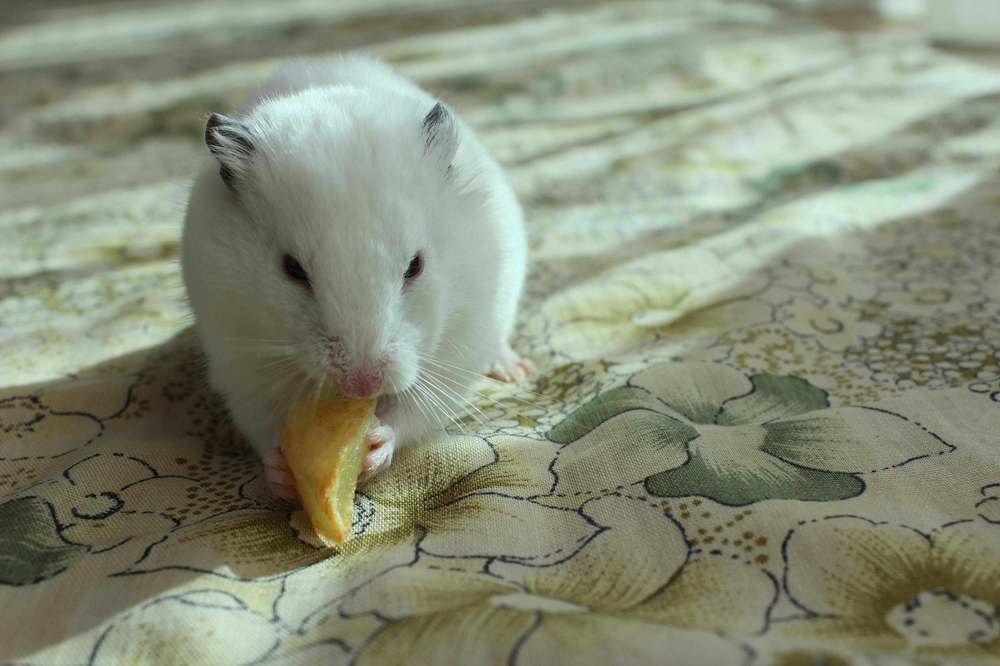

🌿 Available for Free Adoption
Whisker is a tiny Winter White hamster with a lively personality. She loves running on her wheel, burrowing in bedding, and nibbling treats. Whisker is healthy, friendly, and perfect for small pet lovers.
Adopt Me